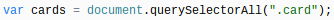
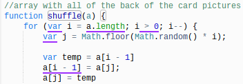

The purpose of this page is to help you understand the first main steps we took into making the Javascript page in order to make a memory game.
Steps We took:
The first step we took to make the JavaScript page was make a variable. We named the variable "cards" and used the querySelectorAll () method to return all the elements that would be in an array of the animal images for the face up cards of the memory game.

Next, we made a function to shuffle the array. Beneath it, we made a for loop to run the code over again, but with different values for the array each time. There are 3 different statements that occur before, during, and after the for loop. The first statement of the for loop was "var i = a.length". This statement identifies the total length of the array. The second statement was "i > 0", which states that if i (the index) is greater than 0, then the third statement "i--" will happen. This will remove (or pop) the last added (or pushed) index in the array. In the first part of the code block in the for loop, it states that in variable j, a number like a decimal, will go back to the whole number. For example, if you have the number 2.5, it will become just 2. This is represented by "Math.floor". "Math.random ( )" picks a random value between 0 and the index. The second half of the code block is a variable called temp. The variable temporarily stores an index, and for this specific situation, the var temp is storing the index "[i - 1]" from the array. The code that says "a[i - 1] = a[j]" states that these two indexes from the arrray can be placed into one another. This couldn't be possible unless both where placed into a storage area, such as var temp. Once we put all these datails into coding, we made a comment above this code and commented saying that this part of the coding is the "array with all of the back of the card pictures". It looked like the following:

Lastly, we made an array with the values (or items) needed for the face up cards of the memory game. We named the array "animals" and inside the array, we inserted the links to each of the pictures twice, since they would be used double to match the cards if they have the same image on the face up side of the card. We made a function called "shuffle" to shuffle the cards, so that they could be placed randomly anywhere on the board. The coding looked like this: